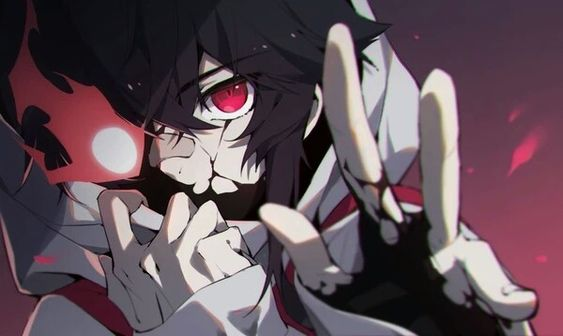

El Hatsu de Atis es "Sangre Hirviente":
Atis tiene la particularidad de mezclar su Nen con sangre,la cual dota de ciertas capacidades extra.Su Nen se puede volver mas tangible al tacto
y al potenciarlo puede ser devastador al golpear.Esta actua dandole +1 en fuerza.Puede usar esto durante 8 turnos hasta que entre en SANGRE COAGULADA
 Sangre Coagulada Cuando Atis pierde demasiada sangre,queda inconciente por la falta de ella en su cuerpo.Su subconciente toma el control y empieza
a atacar a su enemigo.Aun en este estado Atis no ataca a sus conocidos mas cercanos (no se sabe de gente que recien conoce).
En este estado Atis recibe +4 de fuerza y puede actuar dos veces por turno,ademas sus golpes provocan FUERZA*D8.Solo puede permanecer en este estado dos turnos antes de quedar inconciente